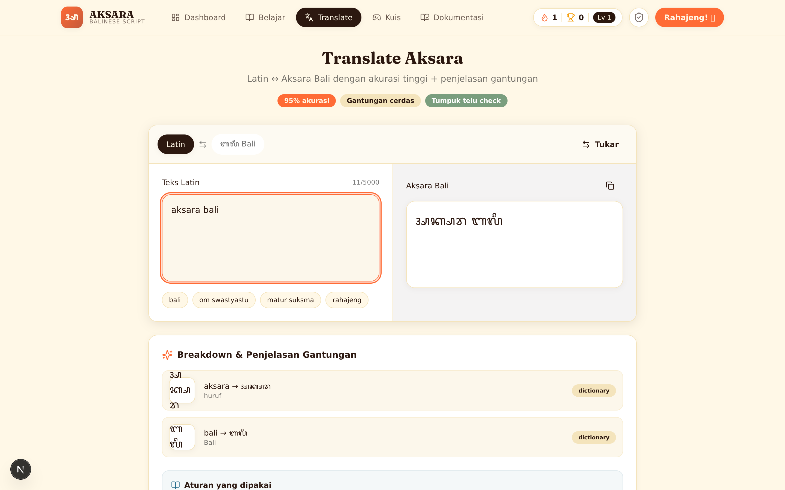
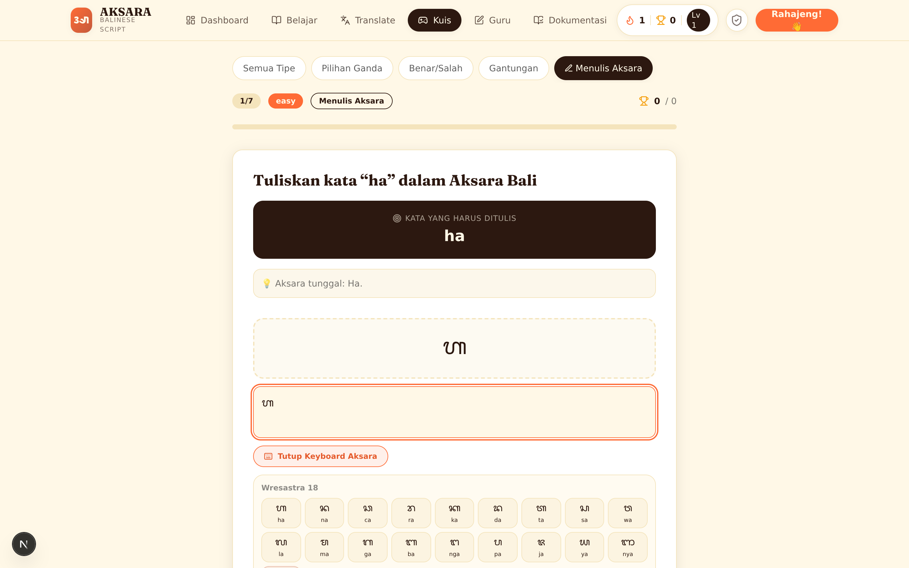
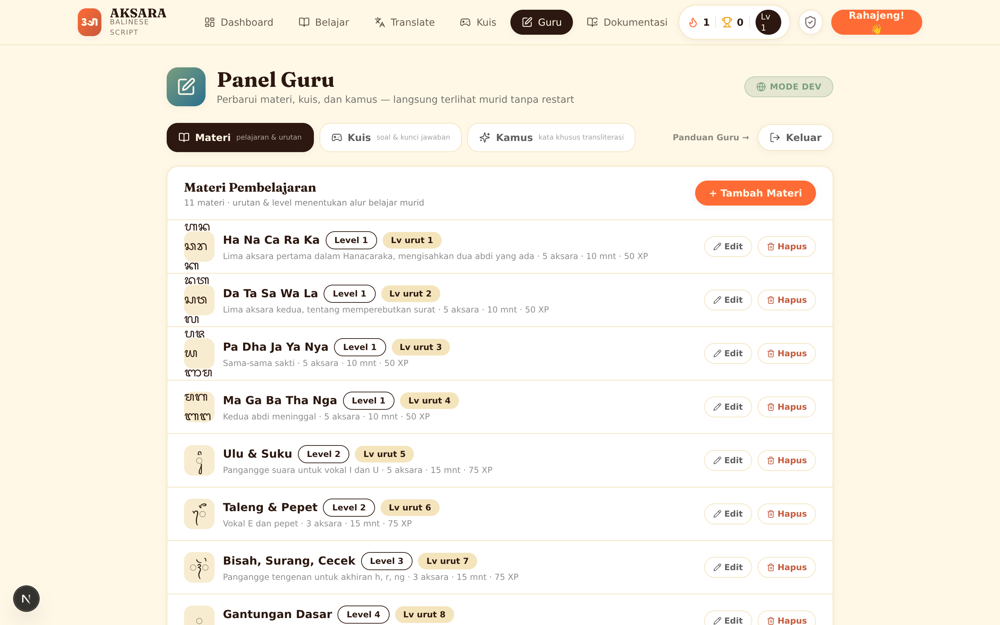
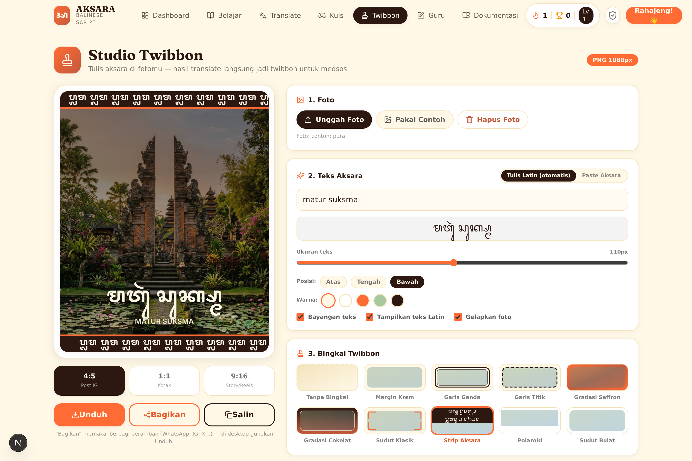

ᬅᬓᬱᬭ
Melestarikan Warisan, Menulis Masa Depan
Platform digital interaktif untuk melestarikan bahasa, aksara, dan literasi Bali.
penutur Bahasa Bali di Pulau Bali (populasi 4,46 jt)
kategori vitalitas bahasa Bali menurut pemerintah (2022)
wajib/minggu: Pergub Bali No. 7/2026 — aksara jadi mapel
Generasi muda masih bisa bicara — tapi makin sedikit yang bisa menulis aksaranya. Dan 2026, negara memberi tenggat: ajar di semua sekolah.
Aksara mengubah pelestarian dari menyimpan menjadi menulis kembali — gratis, browser, tanpa install.
Latin ↔ Aksara dua arah, akurat, dengan penjelasan aturan per suku kata.
11 pelajaran, 6 level, Wresastra 18 → kalimat, dengan XP & streak.
Termasuk menulis aksara — tervalidasi otomatis, saran per aturan.
Foto + aksara otomatis → gambar 1080px, share ke medsos.


Pergub 7/2026 menuntut konten lokal di bawah kendali sekolah. Panel Guru menjawab itu.


Next.js 15 (React 19, TS, Tailwind) diekspor statis. Canvas twibbon, keyboard aksara virtual, Zustand.
FastAPI single-process: translate, classify, lessons, quiz, manage, engagement. Engine rules+dictionary.
JSON store + RLock + tulis atomik, git-versioned, dibaca per request → konten guru langsung hidup.
run.py/run.sh/run.bat: .venv + pip + build + serve di 1 port (stdlib). Tanpa Node di runtime.
Medium digital permanen untuk aksara. Breakdown aturan membangun literasi, bukan hafalan. Twibbon menyebarkan aksara ke medsos.
11 pelajaran terstruktur pas slot 2 JP/minggu. Asesmen menulis instan. Panel membuat setiap guru menjadi pengarang.
Live di domain .id. Penghitung kunjungan & twibbon jujur (rate-limited). 57 test backend + build type-check frontend.
| Lapisan | Ukuran | Dasar |
|---|---|---|
| TAM | 4,46 jt penduduk Bali · 3,33 jt penutur · semua sekolah formal | Semua warga = calon pembelajar; semua sekolah = pemegang mandat |
| SAM | Sekolah + pasraman + sanggar + diaspora + wisatawan | Mandat (sekolah) + sukarela (komunitas, turis) |
| SOM thn 1 | Pilot 10–30 sekolah + pertumbuhan organik | Gratis untuk murid; twibbon = channel akuisisi (CAC ≈ 0) |
Ekspansi — "Aksara Nusantara": engine, kuis, dan twibbon bersifat script-agnostic → Aksara Jawa, Lontara Bugis, Batak. Model berkelanjutan (gratis murid; lisensi sekolah + white-label multi-aksara), tak bergantung pendanaan VC.
Pilot 5–10 sekolah mitra, onboarding, kuis co-design. HTTPS + backup di .id. PWA offline untuk kelas bandwidth rendah.
Laporan kuis per kelas, pola kesalahan menulis. Akun opsional (progress sinkron). Audio pengucapan per karakter.
Port engine ke Aksara Jawa + Lontara Bugis. Workspace multi-tenant per sekolah. Dewan konten bersama sanggar & Balai Bahasa.
Metrik sukses tahun 1: ≥30 sekolah mitra · ≥90% completion pilot · ≥50.000 twibbon · 100% topik silabus ter-cover.
Coba sendiri sekarang: aksara.id